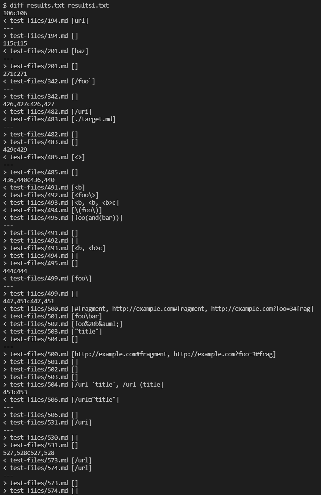
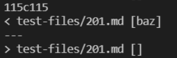
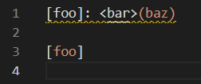
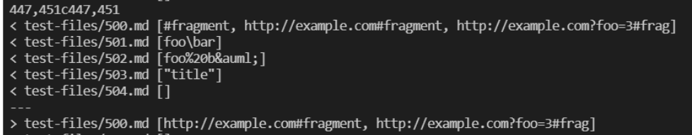
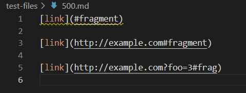

How did I find the two different results?
Following the instructions in lab 9, I first stored all the results generated by the implementation of MarkdownParse provided in lab 9 in results.txt. Then, I stored the results generated by my implementation in results1.txt. As shown in the image, I used diff to compare these two files and found a great number of different results.
Among all, I picked test-files/201.md and test-files/500.md (for convenience, they will be called Test 201 and Test 500 respectively).
Test 201
 The preview given by VS Code looks like this:
Therefore, it's clearly that the given implementation is wrong while mine is correct, since there're no real link in this file.
The easy way to fix this bug is to add a condition to check the distance between them
Test 500
 The preview given by VS Code looks like this:
The result generated by my implementation only includes 2 links while the given got them all.
The given is correct. Mine is wrong.
The reason my implementation failed this one is that I tried to detect "!" before the open bracket to determine if this is a image, but I set the wrong condition so it misses the first link.
The annotated codes are the original code. Under them are the fix.
Before, when open bracket is at 0, the link followed it just got missed. Now, it will still be included in the list.